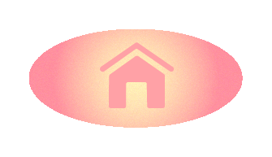
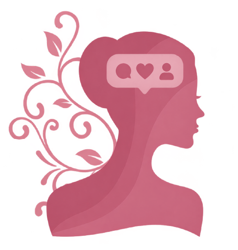
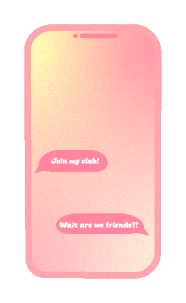
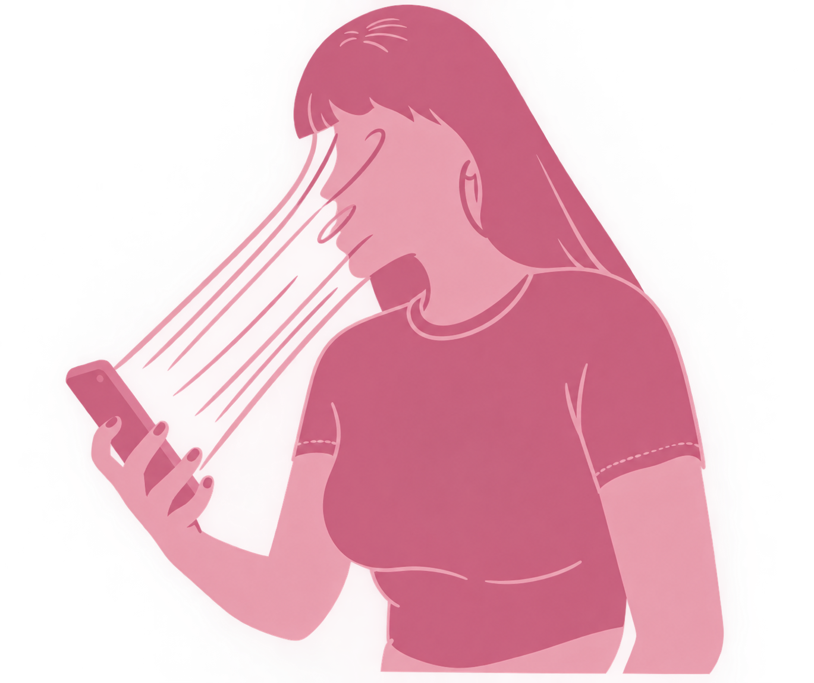

Op deze pagina ga ik aan jullie uitleggen hoe influencers te werk gaan. Mijn idee is om hiermee mensen te laten zien hoe ze op een bepaalde manier beïnvloed worden zonder dat zij dat weten. Als eerste vertel ik jullie over hoe je een influencer kan worden en daarna leg ik een aantal technieken uit.
Influencers zijn mensen dia als baan hebben om content voor een bepaald bedrijf te maken om zo mensen te “influencen” oftewel beïnvloeden.

Als iemand een influencer wil worden moet diegene eerst een eigen pagina aanmaken. De meeste influencers maken een pagina aan op tiktok of Instagram maar je zou natuurlijk ook een pagina op facebook of YouTube aan kunnen maken. Na het aanmaken van een pagina begint een influencer met video’s posten. Deze video’s moeten doelgericht worden gepost zodat je een bepaalde groep aanspreekt. Als er genoeg mensen jouw filmpjes zien, stromen vanzelf de promotieberichten van bedrijven binnen. Vervolgens is het idee om dan een bedrijf te promoten door producten uit te proberen en deze aan jouw kijkers te laten zien (en vaak aan raden).
Influencers hebben veel technieken om mensen te beïnvloeden. Ik ga je nu een aantal technieken laten zien die ik zelf het meeste voorbij zie komen (en waar ik vaak door beïnvloed wordt).
Om te starten maken veel influencer gebruik van de techniek om hun kijkers te laten denken dat hun een persoonlijke relatie met de influencer hebben. Dit komt vooral doordat de kijkers veel tijd met de influencer op hun telefoon doorbrengen, en zo het idee krijgen dat hij of zij een vriend of vriendin is. Influencers geven vaak ook een persoonlijk kijkje in hun leven aan hun kijkers. Een “spend a day in my life with me” video laat een kijker al snel het gevoel geven dat hij of zij een persoonlijke connectie met de influencer heeft.

Influencers maken er vaak ook gebruik van dat jij op jouw ster wil lijken. Neem als voorbeeld Rihanna die tijdens de Super Bowl een poeder van haar eigen lijn gebruikte. Ze heeft niks bijzonders gezegd of gedaan en de verkoop van de poeder ging massaal omhoog want iedereen wil op zijn of haar ster Rihanna lijken.
Er zijn verder nog talloze tactieken maar ik leg je er nog 1 uit. Zo maken influencers gebruik van mensen die FOMO hebben oftewel: Fear Of Missing Out. Mensen zijn bang dat als ze dat ene product die de influencer laat zien niet kopen, ze buiten de groep vallen. Lijnen zoals “Ren nu naar de …” of “Wat doe je als je (het product) nog niet gekocht hebt” worden hierbij vaak gebruikt.

Net zoals ik in het begin zei hoop ik dat ik door dit bekent te maken mensen kan laten zien hoe je in het dagelijks leven beïnvloed kan worden. Beinvloed worden is niet perse iets slechts, maar als het elke dag gebeurt kan het wel slecht worden. Ik hoop dat jullie net zoals ik hiermee een aantal centjes in jullie zak kunnen houden om voor andere dingen te sparen.